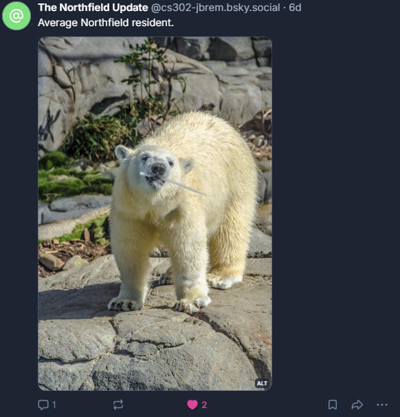
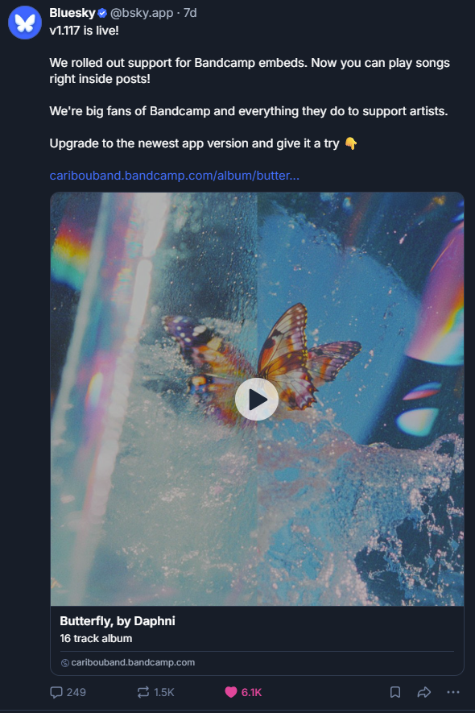

Social Media X Ethics
For this unit, I created a silly social media bot to create posts about Northfield's weather, and like other users' posts. Below, I share the basic functionality of the bot, as well as an ethical perspective on social media bots as a whole. View the bot's account here!Text-Only Post & External Library
When run, the bot makes a text post including the actual current temperature in Northfield, Minnesota. This temperature is accessed using the python_weather library.
Multimedia Post
When run, the bot makes an image post of a polar bear with the caption, "Average Northfield resident."

Multimedia Post
When run, the bot will find the most recent posts in its timeline and like them.

Ethics
In class, we discussed bots and social media as a whole from a ethical perspective. I was particularly interested to hear my classmates' takes on whether social media served as a product or a platform; I was shocked by the number of my classmates that were adamant that social media is more of a platform rather than a product. I'm inclined to approach social media as almost exclusively a product, and that it should be thought of through the ethical lens of safe product design, rather than through the lens of curating a public / pseudopublic space.In regards to this, I particularly reflected upon the concept of the 'Socialbot Network,' and bots pretending to be human in order to exploit attention. Under this context, how could social media serve as the kind of platform that a real-life public meeting space does? What does it mean when a platform can be influenced by forces that appear to be many individuals, but are actually a single actor creating a horde of fake people?
My lingering question in regards to social media has always been this: is it worth it? Are the communities and friendships built on social media worth the damage that is has caused?
Boshmaf, Y., Muslukhov, I., Beznosov, K., & Ripeanu, M. (2011). The Socialbot Network: When Bots Socialize for Fame and Money. ACSAC ’11, 1(1), 93–102. https://doi.org/10.1145/2076732.2076746